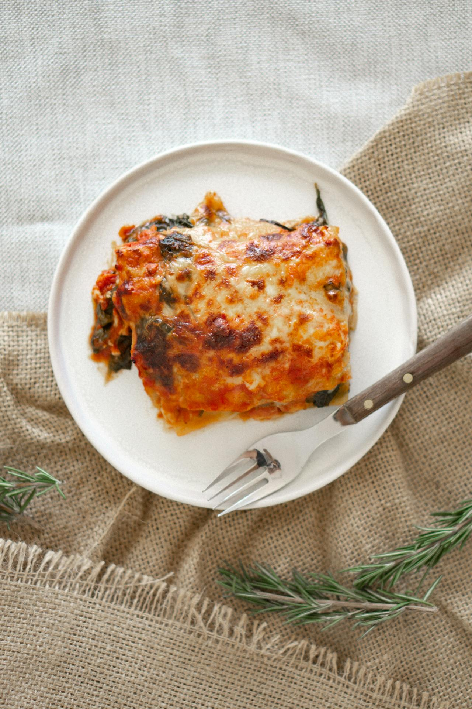

World’s Best Lasagna

Description
This classic homemade lasagna features tender pasta layered with a rich meat sauce, creamy béchamel, and melted
cheese. It's the perfect comforting dish for any meal, combining beloved Italian flavours into a delicious and
satisfying bake.
---
Ingredients
- 500g lasagna sheets (no-boil or fresh)
- 500g minced beef (or a mix of beef and pork)
- 1 large onion, finely chopped
- 2 cloves garlic, minced
- 2 x 400g cans crushed tomatoes
- 150ml red wine (optional)
- 2 tablespoons olive oil
- 1 teaspoon dried oregano
- Salt and black pepper to taste
- 100g Parmesan cheese, grated
For the Béchamel Sauce:
- 50g unsalted butter
- 50g plain flour
- 600ml full-fat milk, warmed
- Pinch of nutmeg
- Salt and white pepper to taste
For Layering:
- 250g mozzarella cheese, shredded
---
Steps
- Prepare the Meat Sauce (Ragù): Heat olive oil in a large pot or deep frying pan over medium heat. Add the
chopped onion and cook until softened, about 5 minutes. Add minced garlic and cook for another minute until
fragrant.
- Add the minced beef to the pot. Break it up with a spoon and cook until browned on all sides. Drain any
excess fat.
- Pour in the red wine (if using) and simmer for 5 minutes, allowing the alcohol to evaporate. Stir in the
crushed tomatoes and dried oregano. Bring to a gentle simmer, then reduce heat to low, cover, and let it
cook for at least 30-45 minutes (or longer for deeper flavour), stirring occasionally. Season with salt and
pepper to taste.
- Make the Béchamel Sauce: While the ragù simmers, melt the butter in a saucepan over medium heat. Add the
flour and whisk constantly for 1-2 minutes to form a smooth paste (roux).
- Gradually whisk in the warm milk, a little at a time, ensuring each addition is fully incorporated before
adding more, to prevent lumps. Continue whisking until the sauce thickens to a smooth, creamy consistency.
Season with salt, white pepper, and a pinch of nutmeg. Remove from heat.
- Preheat Oven: Preheat your oven to 180°C (160°C fan/Gas Mark 4).
- Assemble the Lasagna: Spread a thin layer of meat sauce on the bottom of a large ovenproof dish.
- Place a layer of lasagna sheets over the sauce.
- Spread a layer of béchamel sauce over the pasta sheets, followed by a layer of meat sauce, and then a
sprinkle of shredded mozzarella.
- Repeat the layering process: pasta, béchamel, meat sauce, mozzarella, until all ingredients are used, ending
with a final layer of pasta, béchamel, and a generous topping of mozzarella and grated Parmesan cheese.
- Bake: Cover the dish loosely with foil and bake for 25 minutes.
- Remove the foil and bake for another 20-25 minutes, or until the top is golden brown and bubbling, and the
pasta is tender.
- Rest: Let the lasagna rest for 10-15 minutes before serving to allow it to set and make slicing easier.
Home